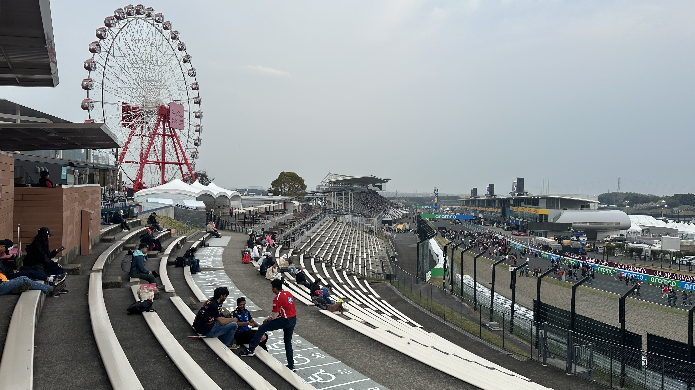
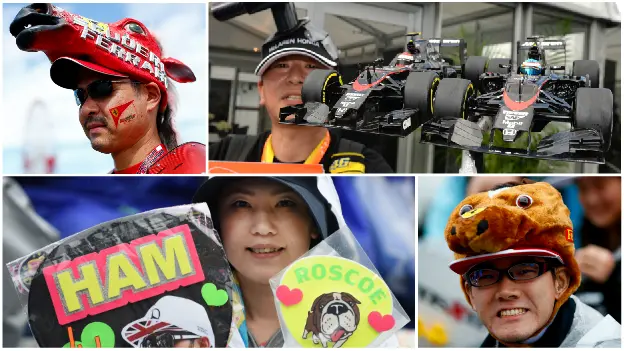
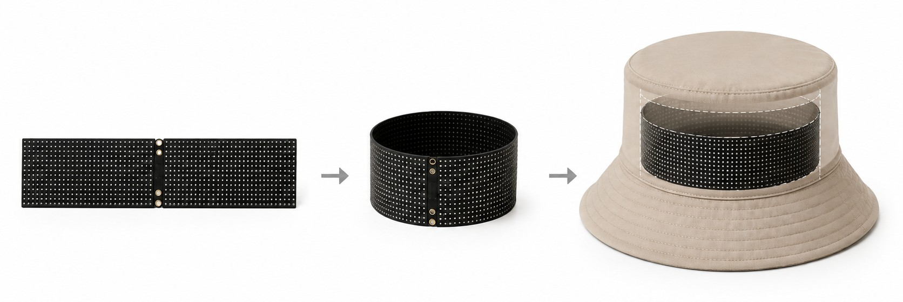
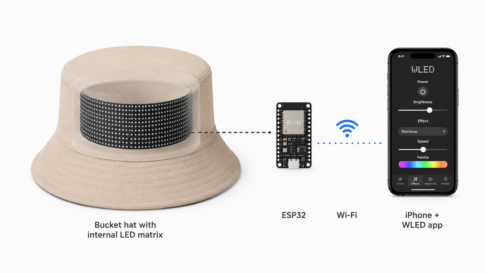
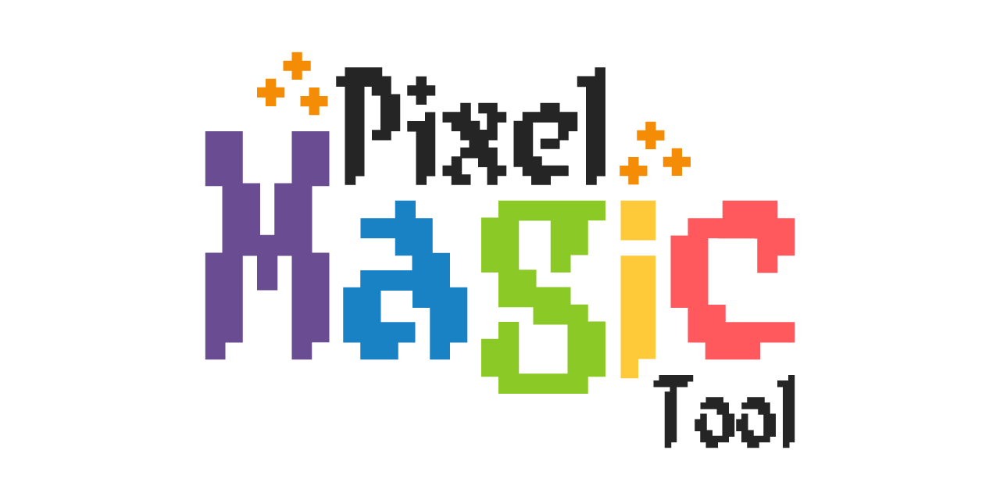
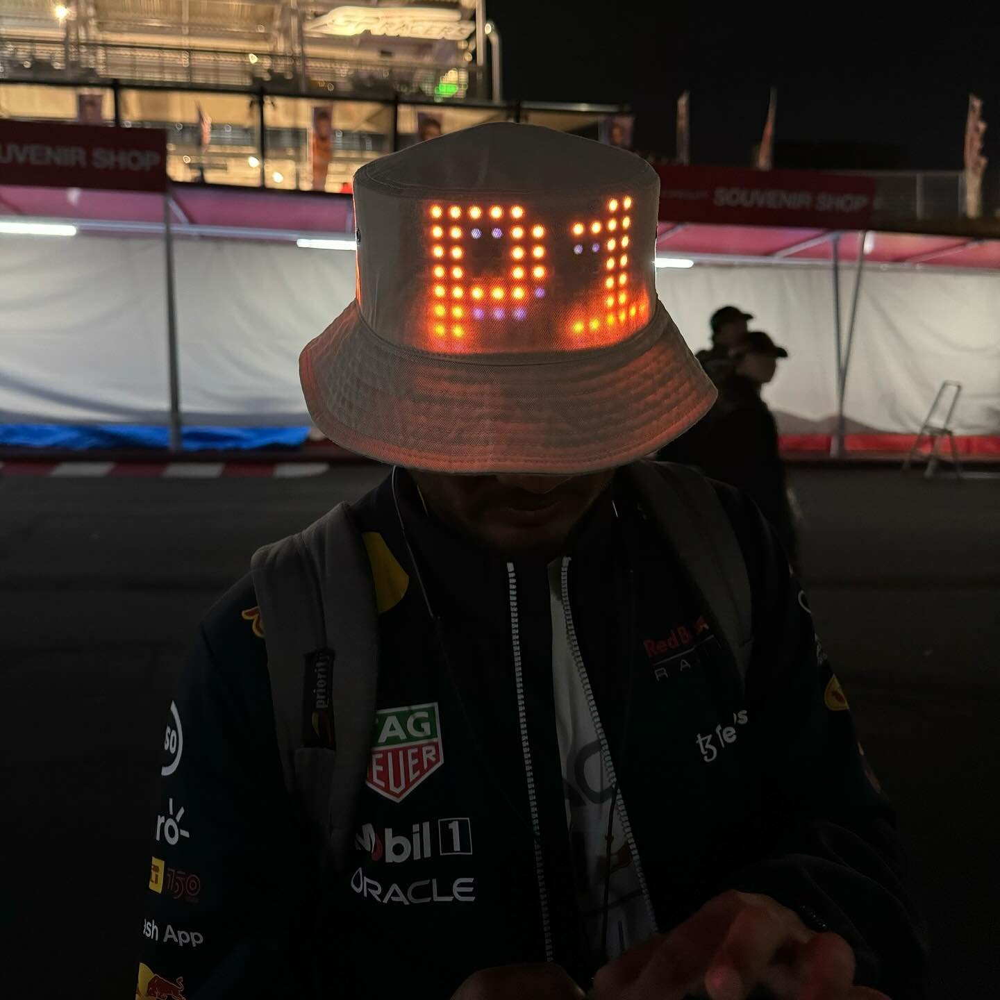

360° LED Matrix Bucket Hat
for the Japanese Grand Prix

This was my third visit to Suzuka Circuit. For any F1 fan, Suzuka is a pilgrimage. Japanese fans show up to the race weekend in the most creative hats and outfits I have ever seen. That got me thinking. I wanted to build something for the race that no one had seen before.

Motivation
Being an electronics guy and a petrolhead, my first thought was something with LEDs. I did some research and found that LED matrix caps already exist, but they only cover the front of the cap. I wanted to go further. A bucket hat with LED matrix going all the way around, 360 degrees. Something you can see from any angle in the crowd.
Sourcing the hardware
I looked for LED matrix panels that were cheap but still easy to control. After comparing a few options I went with two 32x64 LED matrix panels from AliExpress. The plan was to connect the two panels side by side around the hat, with a small overlap where they meet, so the display wraps all the way around.

Choosing the brains: ESP32 + WLED
While waiting for the panels to arrive (about a week), I started thinking about how to control them. I did not want a hat that just shows one fixed message. I wanted to control it live, at any point, from my phone. ESP32 was the obvious choice as the controller.
For sending data to the ESP32, I wanted it to be as easy as sending a text. That is where WLED came in. It is an open source firmware for LED controllers that works over WiFi. It also has its own iOS and Android app, so I could just open the app on my phone and change what the hat shows in real time, no laptop needed.

Bring-up and testing
Once the panels were connected to the ESP32, I used WLED's built-in configuration to set exactly which LEDs are active across the combined panel. First tests were simple, solid colors, dynamic effects, and the built-in text feature, just to make sure everything was wired correctly.
Custom graphics and hitting ESP32's limits
Once the basics were working, I moved to custom graphics. I used Pixel Magic Tool, an open source tool that converts images and GIFs into WLED JSON files. This is how I made the rotating F1 logo.
Storage on the ESP32 is limited though. I found that animations with more than 6 frames slow everything down noticeably, and you can see it on the panel. So I kept just one custom animation, the F1 logo, and used WLED's built-in effects for the rest. Scrolling text, falling stars, and mixing effects on top of each other. It looked really good.
Pixel Magic Tool
Pixel Magic Tool is the open source tool I used for making custom WLED animations. You upload any image or GIF, set your matrix dimensions, and it gives you a JSON file you push straight to WLED. No coding needed. Click the image below to check it out on GitHub.

Making it wearable
With everything working, I focused on making the wiring clean and sturdy. I used JST connectors and electrical tape so the connections are solid but still easy to take apart if needed. The ESP32 itself sits in my bag, connected to a power bank, and connects to my phone's hotspot when it powers on. The hat is just the display.
The result
It was a hit. People kept stopping me to ask about it and take photos. Some even asked if they could buy it. That kind of reaction is exactly why I build things like this. No real purpose, just fun, and hopefully something that makes people smile.

Shared on r/WLED as an open source project
The project was shared on Reddit's WLED community, including a short video of the hat in action:
My new bucket hat for the Formula One Japanese Grand Prix